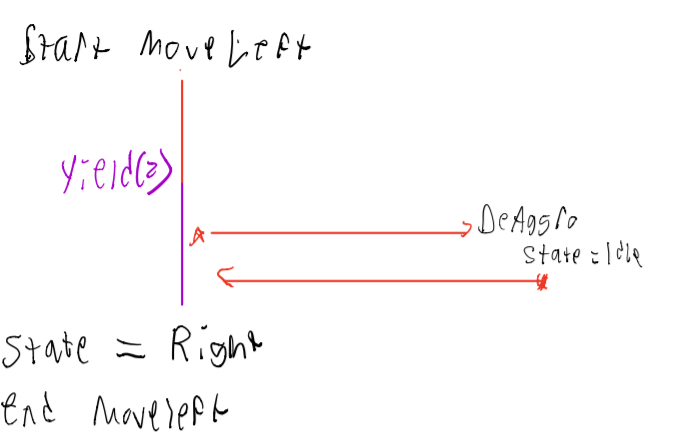

Io: Acrobat Script Iteration (April 12-20, 2020)

The week of April 12th marked the Gold Sprint for project Io: our studios final deliverable for the game. During this sprint, I iterated upon my implementation of the Acrobat's AI script, fixing critical bugs and putting final touches on the creature's movement
Acrobat Trigger issues (5 hours of development time)
In the beta build of the game, it was descovered by one of the lead developers for the studio that the Acrobat enemies in the level would not move. When the player reached the Aggro range of the Acrobat, it would take no action:
This bug was very frustrating for me to hear about. In my local testing environment, the Acrobat appeared to be working fine. However, I realized that my setup was out of date with the official scene for the game. In order to resolve this issue, I did a critical review of my acrobat movement code, making sure that I did not accidently add a change that would prevent the enemy from moving. I placed several debug statements in my code which would print information regarding the internal state of the Acrobat. From the debug statements, I confirmed that the coroutines I set up to move the Acrobat were not activating.While reviewing the Aggro object's settings, I noticed that there was a variable named "Raycast Line of Sight," which I paid no attention to while working on the Acrobat. It was either this setting, or the Raycast Layer Mask, was causing the Acrobat to not move. These variables belong to the EnemyAggro script, which contains logic for how the enemy uses its circle collider to detect players. Which looking over the code, I found a problematic section that could cause the issue:
private void OnTriggerEnter2D(Collider2D other) {
// Invoke OnAggro when the player enters the enemy's trigger or enter search mode
if(other.gameObject.CompareTag("Player"))
{
if (raycastLineOfSight)
{
isSearching = true;
}
else
{
target = other.gameObject;
OnAggro.Invoke();
}
}
}
Due to several project deadlines that came up in my course schedule, I did not have time to completely study the enemyAggro code. However, it appeared that by having the raycastLineOfSight variable on, the script was unable to obtain a reference to the Acrobat's target (which is the player). After turning this variable off, the Acrobat's in the level began to move again:
It is likely that this setting was intended for an enemy which actively patrols for the player: the Stalker enemy, for instance, moves back and forth in a segment of the level until it finds a player to attack. The Acrobat, on the other hand, remains idle on the ceiling until a player enters its aggro range. I was relieved that this was the only issue causing the Acrobat to not move. However, much more work needed to be done.
Better Acrobat AI (25 hours of development time)
A few weeks ago, I changed the Acrobat's prefab collider into a trigger. This change was intended to improve the collisions that the enemy would have with the player. If the object were a trigger, it would stop the player from moving the Acrobat and interrupting its movement patterns. However, while this seemed to work decently when I first implemented it, my change was later found to be buggy. The acrobats would frequently fly through the Crystal Cave's terrain, while attack the player from unexpected angles:
This bug made the Acrobat infuriating to fight during the Wolverinsoft Studio playtests. Moreover, I did not intend for this issue to occur: at the time that I tested the change, I was unable to reproduce this issue. For the remainder of the Studio's gold sprint, I spent a significant amount of time fixing this bug, and improving upon the movement patterns of the Acrobat. I spent several hours attempting to get the trigger collider code to better detect Terrain. I tried using the Unity library's "IsTouching" function to prevent non-player objects from triggering the Acrobat collider. In addition, I put in tag comparisions in order to detect the type of object which triggered the Acrobat: upon hitting an object tagged as "Terrain" or "Hazard", I would set the acrobat's velocity to zero. However, these changes were not enough to consistently prevent the Acrobat's from penetrating the terrain. With the final deadline looming, and after several failed attempts, I ended up reverting the Acrobat's trigger back into a collider. Having the Acrobat as a trigger turned out to be more problematic for physics with the environment, and was ultimately too difficult for me to get working within the project's time constraints.
Acrobat: Fixing Unpredictability
Another piece of feedback that I recieved during the studio's playtest session was that the Acrobat's movement behaviors were too unpredictable. U pon leaping to the player, the Acrobat would repose back to the ceiling, diagonally in the player's direction:
While this made the enemy more challenging to fight, it ultimately proved to be more of an annoyance to players. Without a way to determine where the Acrobat would move next, the player's became frustrated with the enemy, and ended up skipping them all together.
After discussing this issue with my team lead, I decided to go back to a previous implementation of the Acrobats repose movement: instead of leaping in a direction towards the player, the enemy would simply return to its origin location in the environment:
After implementing this change, I realized that consistent attack patterns were key to having a fun enemy AI to fight against. Consistent movement allows for the player to anticipate attacks, anaylze them, and then react to them in a swift manner. The previous implementation made the Acrobat more erratically, and resulted in a negative player experience overall.
Acrobat: Smoother Movement, and syncing state
In addition to making the Acrobat's movement more consistent, I began working on making the Acrobat's movements smoother. Previously, the Acrobat would suddenly attack the player, charging at them at a high speed. This would give the player little time to react to the attack, and prevent them from counterattacking before the enemy decides to repose back to the ceiling. While looking up how to implement this online, I came across a nice formula that worked well:
enemyScript.desiredVelocity = (location) * speed * Time.fixedDeltaTime;
To set the enemy's velocity, I took the location I wanted the Acrobat to move in, and amplified it by a speed constant. What is key to making the Acrobat's movement feel gradual is Time.fixedDeltaTime. This variable gives an interval, in seconds, at which physics in the game are running. By multiplying the velocity by this variable, this allows for the velocity to be applied over time, as opposed to being done at an instant.
Moreover, I took the opportunity to fix difficult bugs noticeable in the Acrobat's behavior. One of these issues is as follows: sometimes, while reposing, the Acrobat would sometimes jolt in the direction of the player while completing its repose action. I was unable to exactly pinpoint what was causing this issue. However, I began to suspect that it was caused due to synchonization issues with the coroutines in my AI script.
Within the AI script, it used to be possible for multiple coroutines to run at the same time. If two coroutines are running, and both of them modify the same data, it is possible for one to overwrite the changes made by another coroutine before it can return. Due to this, the Acrobat would sometimes change its state before completing the previous one, leading to inconsistent behavior. To ensure that no coroutine is overwriting each other, I use the "StopAllCoroutines" function in Unity before running any new coroutine. As a result, the issue mentioned above did not occur anymore.
The last sigificant issue I fixed with the Acrobat deals with the case where the player leaves its (Acrobat) Aggro range, but immediately comes back to it. Prior to my changes, the Acrobat would immediately attack the player again in midair:

Ideally, the Acrobat would complete its previous state before reengaging with the player. To support this, I made a separate coroutine dedicated to returning the Acrobat to its original location (called ReturnToOrigin). Now, when the Acrobat is initialized by the BecomeActive function, it will check to see if the enemy is at the origin. If it is not, ReturnToOrigin is called. Within this function, it does not complete until the distance between the enemy and its initial location is close enough to be considered reached:
Postmortem
Overall, working in Wolverinsoft Studio was an amazing experience. I got to collaborate with students across multiple disciplines and was able to contribute to a game from start to finish. It was challenging at times: in many cases, I was stuck for multiple hours at a time trying to implement a feature. Although I had a clear understanding of the aspect of the Acrobat, coming up with the code to implement the Acrobat was challenging at times, and I was often stuck for several hours at a time attempting to figure out how to program a certain feature.
However, I believe that this is partially due to my inexperience; I have only been doing game programming for about a year now. Moreover, I could have been more proactive about reaching out to other members in my pod to receive help on my tasks.
I learned from this experience that knowing when to reach out to my team members is essential to getting my tasks done. If I encounter a roadblock to implementing a feature, I must reach out for help soon enough. By doing this, I will have enough time to act on my teammates' feedback and guarantee that I have the information necessary to complete my task by its deadline. I must also continue studying video game development and practice designing and writing games in my own time; by doing this, I will grow as a developer.